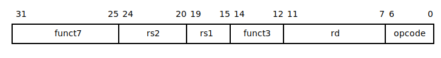
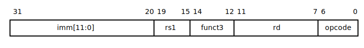
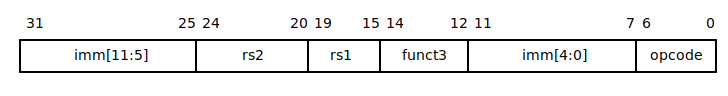
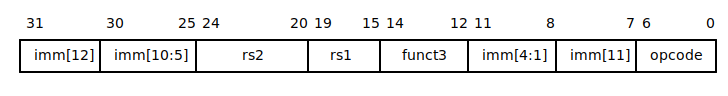
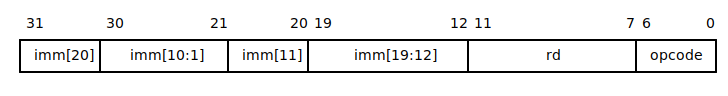

processor.risc_v.isa ≡
RISC-V ISA types, constants and helper functions.
enum Base : uint2 §source
enum Extension : uint1 §source
using Funct7 = uint7 §source
template <Base ISA> class Types §source
Data types for specified base ISA
Aliases
Types
-
struct Decoded §source
Decoded instruction fields
Fields
-
optional<Types::register_index_t> rd §source
Destination register
-
optional<Types::register_index_t> rs1 §source
First operand register
-
optional<Types::register_index_t> rs2 §source
Second operand register
-
Types::int_t imm §source
Immediate operand (not valid for R-type instructions)
-
Funct7 funct7 §source
funct7 field (valid only for R-type instructions)
-
enum RVG : uint5 §source
General-purpose ISA major opcodes
Values
-
LOAD §source
-
LOAD_FP §source
-
custom_0 §source
-
MISC_MEM §source
-
OP_IMM §source
-
AUIPC §source
-
OP_IMM_32 §source
-
long0 §source
-
STORE §source
-
STORE_FP §source
-
custom_1 §source
-
AMO §source
-
OP §source
-
LUI §source
-
OP_32 §source
-
long1 §source
-
MADD §source
-
MSUB §source
-
NMSUB §source
-
NMADD §source
-
OP_FP §source
-
reserved0 §source
-
custom_2 §source
-
long2 §source
-
BRANCH §source
-
JALR §source
-
reserved1 §source
-
JAL §source
-
SYSTEM §source
-
reserved2 §source
-
custom_3 §source
-
long3 §source
using Funct3 = uint3 §source
enum Op : Funct3 §source
OP/OP_IMM minor opcodes
enum MulDiv : Funct3 §source
“M” standard extension minor opcodes
enum Branch : Funct3 §source
BRANCH minor opcodes
enum LoadStore : Funct3 §source
LOAD/STORE minor opcodes
enum System : Funct3 §source
SYSTEM minor opcodes
enum MiscMem : Funct3 §source
using Reg = uint5 §source
enum ABI : Reg §source
Mnemonics for integer registers in the standard calling convention
Values
-
zero = 0 §source
Hard-wired zero
-
ra = 1 §source
Return address
-
sp = 2 §source
Stack pointer
-
gp = 3 §source
Global pointer
-
tp = 4 §source
Thread pointer
-
t0 = 5 §source
Temporary/alternate link register
-
t1 = 6 §source
Temporary
-
t2 = 7 §source
Temporary
-
s0 = 8 §source
Frame pointer
-
s1 = 9 §source
Saved register
-
a0 = 10 §source
Function arguments/return values
-
a1 = 11 §source
Function arguments/return values
-
a2 = 12 §source
Function arguments
-
a3 = 13 §source
Function arguments
-
a4 = 14 §source
Function arguments
-
a5 = 15 §source
Function arguments
-
a6 = 16 §source
Function arguments
-
a7 = 17 §source
Function arguments
-
s2 = 18 §source
Saved register
-
s3 = 19 §source
Saved register
-
s4 = 20 §source
Saved register
-
s5 = 21 §source
Saved register
-
s6 = 22 §source
Saved register
-
s7 = 23 §source
Saved register
-
s8 = 24 §source
Saved register
-
s9 = 25 §source
Saved register
-
s10 = 26 §source
Saved register
-
s11 = 27 §source
Saved register
-
t3 = 28 §source
Temporary
-
t4 = 29 §source
Temporary
-
t5 = 30 §source
Temporary
-
t6 = 31 §source
Temporary
template <auto N> inline int32 sign_extend(uint<N> x) §source
Sign-extend an integer to XLEN bits
struct R_type §source
R-type instruction format
struct I_type §source
I-type instruction format
struct S_type §source
S-type instruction format
struct B_type §source
B-type instruction format
struct U_type §source
struct J_type §source
J-type instruction format
union Instr §source
enum Format : uint3 §source
template <Base ISA> inline Types<ISA>::Decoded decode_format(Instr instr, Format format) §source